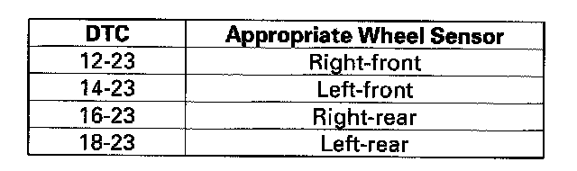

DTC 16-23
DTC 12-23: Right-front Wheel Sensor Installation Error (0 to 9 mph (0 to 15 km/h))DTC 14-23: Left-front Wheel Sensor Installation Error (0 to 9 mph (0 to 15 km/h))
DTC 16-23: Right-rear Wheel Sensor Installation Error (0 to 9 mph (0 to 15 km/h))
DTC 18-23: Left-rear Wheel Sensor Installation Error (0 to 9 mph (0 to 15 km/h))
1. Test-drive the vehicle. Drive the vehicle between 1 mph (1 km/h) and 9 mph (15 km/h) in a straight line.
NOTE: Drive the vehicle on the road, not on the lift.
2. Check the RF, LF, FIR, LR WHEEL SPD in the VSA DATA LIST with the HDS.
Are all the same indicated values?
YES - Intermittent failure, the system is OK at this time. Check for loose terminals between the wheel sensor 2P connector and the VSA modulator-control unit 37P connector. Refer to intermittent failures troubleshooting.
NO - Go to step 3.
3. Turn the ignition switch OFF.
4. Check that the appropriate wheel sensor is properly mounted.

Is the wheel sensor installation OK?
YES - Replace the appropriate wheel sensor.
NO - Reinstall the wheel sensor, and check the mounting position.